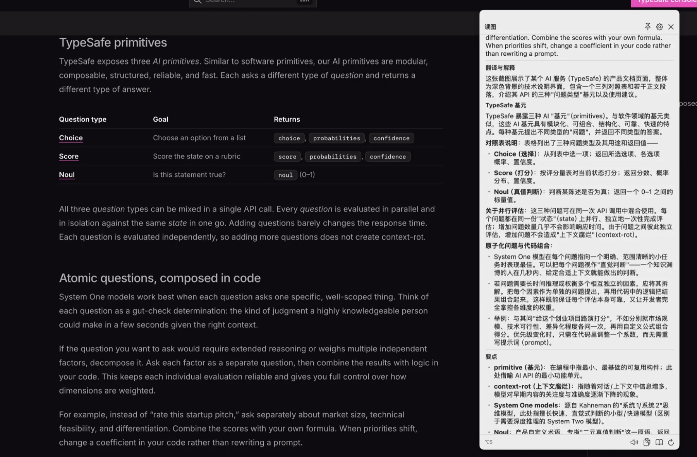
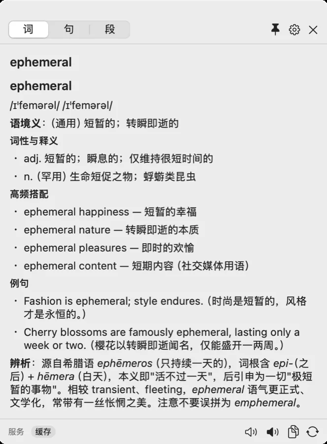
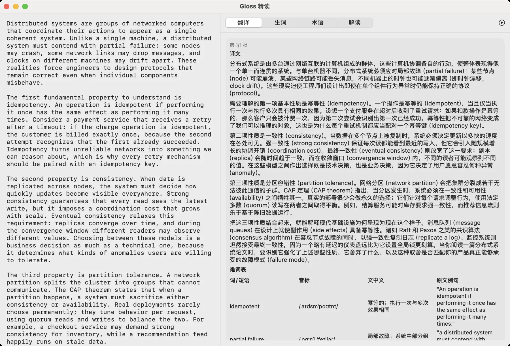

Gloss 是一款常驻菜单栏的 Mac 系统级英文阅读助手。选中按 ⌥D， 浮窗即刻弹出词典级解释——带美英音标、结合上下文的语境义、搭配与例句。屏幕上任何看得见的英文， 框一块按 ⌥S 就能问。
A distributed system is a collection of coherent nodes that must remain correct under partial failure. Every retry needs an idempotent operation to avoid double charging.
When a quorum of replicas acknowledges a write, the value is considered committed, and any later read must observe that same value.
An ack is a promise: once the write reaches durable storage, no failover can take it back — that guarantee is what engineers mean by durability.
读英文技术文档时，遇到生词要切去词典网站，遇上拿不准的长句要复制去问 ChatBot，看到图里的英文还得截图发多模态模型。每条路径都是 5 步以上，而阅读节奏就断在这里。
权限引导是检测式的：不用某个通道就永远不会弹权限请求。已授权的通道才会在你真正用到时出现引导。
选中文本 → 右键 → 服务 →「Gloss 查词」。完全走 macOS 原生服务通道，不需要任何辅助功能权限。
最快的通道。AX 优先取词（带选区 bounds 与上下文），失败自动降级为模拟 ⌘C 读剪贴板，两通道自动切换。
框选屏幕任意区域——图片、图表、视频画面、不可选中的界面——直接交给多模态模型读图解释。框选时按 ESC 静默取消。
Gloss 按选区内容的形态自动决定出哪张卡：单词、句子、段落，还是直接进精读窗。改选区就是换卡片——不重开窗，原地刷新。下面随便点，或者自己输入一段试试。
图表、截图、PDF 页面、视频画面里的英文——这些不是文本，划不出来。Gloss 把框选区域整块交给多模态模型读图，并且能在缩略图上直接点某个单词继续深挖。不做本地 OCR，少一层"识别错→解释错"的间接链路。
| Region | Throughput (rps) | p99 Latency | Strategy |
|---|---|---|---|
| us-east-1 | 18,420 | 42ms | quorum write |
| eu-west-1 | 11,905 | 118ms | async replicate |
| ap-southeast-1 | 7,338 | 203ms | leader affinity |
一张性能对比表：Throughput vs. p99 Latency，含 us-east-1 / eu-west-1 / ap-southeast-1 三个区域的 rps、延迟与一致性策略列。
这张表在比较三个可用区在吞吐与 p99 尾延迟之间的取舍。 美东吞吐最高（18,420 rps）但延迟最低（42ms），说明本地 quorum 写成功率高；亚太区吞吐掉到 7,338、延迟升到 203ms， 因为走了 leader affinity——所有写都要跨区打到同一个 leader。
延迟与吞吐呈反相关，这是跨区域一致性的典型代价：quorum write 换可用性， async replicate 换吞吐，leader affinity 换一致性。
截图按长边 1568px 压缩为 JPEG 后发送。松手 → 浮窗 <0.3s，读图结果首字 <3s。
长文自动分批请求（防输出截断），分批进度显示在 Tab 角标，已完成的批次可以先读。右侧四个页签各管一件事，切过去就是你要的那层理解。
分布式系统是由多台通过网络互联的计算机组成的群体，这些计算机协调各自的行动，使整体表现得像一个单一而连贯的系统。
需要理解的第一项基本性质是幂等性（idempotency）。一个操作是幂等的（idempotent），当且仅当执行一次与执行多次具有相同的效果。设想一个支付服务在超时后收到了重试请求：如果扣款操作是幂等的，客户只会被计费一次，因为第二次尝试会识别出第一次已经成功。
第二项性质是一致性（consistency）。当数据在多个节点上被复制时，系统必须决定更新以多快的速度在各处可见。
第三项性质是分区容错性（partition tolerance）。网络分区（network partition）会把集群分裂成若干无法彼此通信的子群。
"An operation is idempotent if performing it once has the same effect as performing it many times.""some nodes may crash, some network links may drop messages""clocks on different machines may drift apart""even when individual components misbehave"幂等性：同一请求执行一次与多次效果相同。靠幂等键（idempotency key）实现，是重试机制的安全前提。
分区发生时，分布式系统必须在一致性与可用性之间做取舍——三者不可兼得。
此处指副本间数据一致：强一致性保证每次读都能看到最新写入，但引入随规模增长的协调开销。
法定人数：足够多节点（常为多数派）确认后操作才算提交，从而在网络分区时仍能达成一致。
作者用"分布式系统的三项基本性质"作为骨架：幂等性 → 一致性 → 分区容错性，层层递进。
每项性质都用一个具体场景举证：幂等性用支付重试举例，一致性用副本复制举例，分区容错性用 CAP 定理举例。
从"单项性质"转向"组合后的系统行为"——真正的工程复杂度来自三项性质的相互作用，而非任何单项。
CAP 定理是社区争论的常客：它描述的是分区发生之后的取舍，而非任意时刻都要三选二。读到这里要警惕被简化的流行说法。
精读结果按（文本哈希 + 模型 + prompt 版本）缓存，重开秒显。点任一生词可直接切到单词卡。
下面三张是 App 实机截图，没有做任何修饰。点任意一张可以放大看。



nonactivating NSPanel，永不成为 key window——你在原文里继续敲字，浮窗照样显示。跨越全屏视频也能弹出。
类型自动路由、SSE 逐块流式渲染、缓存命中即回显。按键到浮窗出现 <0.2s，首字内容 <1.5s。
走系统 TTS，不额外花钱也不外传文本。美音 / 英音一键切换，词、整句、识别出的图上文本都能读，语速 0.5–1.5× 可调。
缓存键 = sha256(归一化输入 | 类型 | 参数 | 模型 | Prompt 版本)，LRU + SwiftData 持久化。截图点词的坐标量化到 1% 网格后参与键计算。
每次查询都留档，按类型分组，支持搜索与回放。截图条目仅回放不重查——原图不落盘，重查请重新 ⌥S。
Sparkle 2 + GitHub Releases 静态 appcast，零自建后端。更新包经 EdDSA 签名校验，点一下即下载安装并重启，权限不用重授。
API Key 只存本机钥匙串，日志 / 缓存 / 历史中不落明文。无遥测、无崩溃上报、无任何第三方数据收集。
AX 优先（带选区 bounds 与上下文），失败自动降级模拟 ⌘C 读剪贴板并尽力恢复。两通道都失败才给降级提示，并引导改用 ⌥S。
401 说"API Key 无效或已过期"，429 说"请求太频繁"，超时不自动重试（超时≠限流）。429/5xx 指数退避重试 2 次并注明。
客户端走 OpenAI 兼容通用协议。填 BaseURL / 路径 / 模型名就能接任意兼容端点——包括你自己机器上跑的 Ollama。查询内容只发送给你配置的那一家。
可保存多套配置一键切换，查词与精读共用当前活动配置。「测试连接」按钮会发一次最小请求并显示延迟。
一个 zip，解压得到 Gloss.app，拖进「应用程序」即可。
Apple Silicon 与 Intel 共用同一个文件，Intel 端不需要装 Rosetta。
Gloss 用 Apple Development 证书签名、未经过 Apple 公证，所以第一次启动时 macOS 会拦一下。任选一种方式放行：
xattr -cr /path/to/Gloss.appmacOS 14 也可以右键 App → 打开。
更新走 GitHub Releases 静态 appcast， 菜单栏图标 →「检查更新…」或 设置 → 高级 →「检查更新…」。v0.1.2 及更早版本请先手动装一次 v0.1.3。
Gloss 菜单栏常驻，没有 Dock 图标。启动后跟随首启向导走一遍，之后在任何 App 里选中英文按 ⌥D 就行。
打开 Gloss，按首启向导的 4 步走：欢迎 → 配置模型 → 触发方式 → 完成。触发方式默认三条通道全开，用到哪个再授权哪个。
在「配置模型」页选 MiniMax 预设，粘贴你的 API Key，点「测试连接」验证。也可以选其他预设或「自定义」，直接填任意 OpenAI 兼容端点。
在任意 App 里选中英文按 ⌥D。浮窗不抢焦点，按 ESC 关闭。遇到图里的英文就按 ⌥S 框一块。
macOS 对新装的第三方服务默认禁用。到 系统设置 → 键盘 → 键盘快捷键 → 服务快捷键 → 文本，勾选「Gloss 查词」即可（一次性操作）。
⌥D / ⌥S 首次使用会弹出系统权限请求，允许后即可。如果卸载重装过 App 导致权限失效，去「隐私与安全性」里把对应开关关掉再打开即可。
自签分发、不上 App Store 的小工具，代码摊开才敢用。仓库含完整的设计文档、三阶段独立审查记录与发版脚本。
系统框架为主，唯一第三方依赖是更新框架 Sparkle（SPM 拉取）。功能不依赖特定签名方式，自编译版本同样可用。
自编译注意：自动更新链锚定发布方的 EdDSA 密钥对——自编译版本会正常接受官方更新包并覆盖本地产物，按需忽略更新提示或从 Releases 手动安装即可。
以下功能已进入设计、尚未随 v0.1.7 发布，页面上的所有交互演示都只使用已发布能力。
上面某项正是你现在最需要的？或者有你想要但我没列出来的功能——都很想听。
只发送给你自己配置的那一家模型服务商。Gloss 没有服务器，没有遥测、没有崩溃上报、没有任何第三方数据收集。API Key 仅保存在本机钥匙串，日志、缓存与历史中都不落明文。
默认不开「第三方词典极速首屏」。如果开启，单词查询会额外把该词发给对应的公共词典 API——设置页与首启向导都写明了这一点。
可以。朗读走的是系统离线 TTS，完全不经过模型。除查询类功能（词/句/段/读图/精读）需要 API Key 外，菜单栏、设置、历史、缓存管理都能正常使用。
查询只消耗你自己的 API 额度，Gloss 不加价、不中转。重复查询会命中本地缓存，零成本零延迟。
传统划词词典有两个硬伤：无语境与无读音。同一个词在技术文档和文学语境里含义完全不同，词典给的是"最常用义"。
而网页 ChatBOT 交互成本太高、没有读音、查过的东西也不会沉淀。Gloss 补的是这两者之间的空白：语境义置顶 + 音标与朗读 + 结果沉淀可回放。
暂时不能，v0.1.7 的系统下限是 macOS 14（Sonoma）。缓存层用 SwiftData，降到 13 需要重写存储层，而 Ventura 已停止安全更新，暂不划算。
Intel 机型需要能安装 Sonoma，即 Apple 官方支持清单：MacBook Pro 2018 起、MacBook Air 2018 起、Mac mini 2018、iMac 2019 起、iMac Pro 2017、Mac Pro 2019。停在 13 或更早的（如 2017 款 MacBook Pro）暂不支持。
不会。浮窗是 nonactivating 的 NSPanel，永不成为 key window——你可以一边看着释义，一边继续在原文里打字。
唯一需要注意的是 ESC：面板可见期间，ESC 被实现为消费式全局热键（随面板显隐装拆，不需要辅助功能权限），此时按 ESC 只会关面板。这是为"一键关掉浮窗继续读"做的有意取舍。
不做本地 OCR（不引入 Vision 框架）。所有图像理解统一交给多模态模型——图片内文本的"识别"由模型读图时一并完成，省掉一层"识别错→解释错"的间接链路。
截图按长边 1568px 压缩为 JPEG 后以 image_url dataURL 发送。拿到结果后，可以在卡片缩略图上点任意单词继续深挖，坐标会量化到 1% 网格参与缓存键计算。